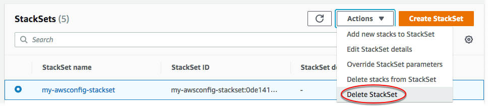

Le traduzioni sono generate tramite traduzione automatica. In caso di conflitto tra il contenuto di una traduzione e la versione originale in Inglese, quest'ultima prevarrà.
Eliminazione di un set di stack
Una volta completata la procedura guidata Nozioni di base su AWS CloudFormation StackSets , puoi seguire le procedure di questa sezione per eliminare set di stack e altre risorse create nell'ambito di questa procedura guidata. Per eliminare un set di stack, devi prima eliminare tutte le istanze di stack al suo interno. Per informazioni su come eliminare tutte le istanze di stack, consulta Eliminazione di istanze di stack da un set di stack.
Eliminazione di un set di stack utilizzando la AWS Management Console
-
Nella pagina StackSets, selezionare il set di stack creato in Creazione di un set di stack. In questa procedura guidata è stato creato un set di stack denominato
my-awsconfig-stackset. -
Con il set di stack selezionato, scegliete Elimina StackSet dal menu Azioni.
 -
Quando vi viene richiesto di confermare che desiderate eliminare il set di stack, scegliete Elimina. StackSet
Eliminazione di un set di stack utilizzando la AWS CLI
Quando si agisce come amministratore delegato, è necessario impostare il parametro --call-as su DELEGATED_ADMIN ogni volta che si esegue un comando StackSets.
--call-asDELEGATED_ADMIN
-
Esegui il comando seguente. Quando viene richiesto di confermare, digitare
y, quindi premere Enter (Invio).aws cloudformation delete-stack-set --stack-set-name my-awsconfig-stackset -
Verificare che il set di stack sia stato eliminato eseguendo il comando
list-stack-sets. I risultati del list-stack-sets comando dovrebbero mostrare lo stack con uno stato pari a.DELETEDaws cloudformation list-stack-sets
Eliminare ruoli dei servizi (opzionale)
Eliminare i ruoli di servizio StackSets necessari per la creazione del set di stack.
Per i set di stack autogestiti, i ruoli creati come parte del Prerequisiti per le operazioni dei set di stack della procedura dettagliata in questa guida vengono denominati AWSCloudFormationStackSetAdministrationRole nell'account amministratore e AwsCloudFormationStackSetExecutionRole in ogni account di destinazione.
Per i set di stack gestiti dai servizi, i ruoli che sono stati creati automaticamente da StackSets come parte della procedura dettagliata Prerequisiti per le operazioni dei set di stack riportata in questa guida hanno il suffisso nell'account di gestione dell'organizzazione e CloudFormationStackSetsOrgAdmin in ogni account di destinazione. CloudFormationStackSetsOrgMember
Per ulteriori informazioni sull'eliminazione di ruoli, consulta Eliminazione di ruoli o profili delle istanze nella Guida per l'utente di IAM.
Per eliminare un ruolo del servizio utilizzando la AWS Management Console
Accedi a AWS Management Console e apri la console IAM all'indirizzo https://console.aws.amazon.com/iam/
. -
Nel riquadro di navigazione scegliere Roles (Ruoli), quindi selezionare la casella di controllo accanto al ruolo che si desidera eliminare.
-
Nel menu Role actions (Operazioni per ruolo) nella parte superiore della pagina, selezionare Delete role (Elimina ruolo).
-
Nella finestra di dialogo di conferma, scegliere Yes, Delete (Sì, elimina). Se sei sicuro, puoi procedere con l'eliminazione anche se l'ultimo accesso ai dati del servizio è ancora in fase di caricamento.
Per eliminare un ruolo del servizio utilizzando la AWS CLI
-
Esegui il comando seguente. Quando viene richiesto di confermare, digitare
y, quindi premere Enter (Invio).aws iam delete-role --role-namerole name